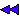

The main window
 The main window is the window that first appears when you
start Virgo. It contains all the features you need to manage OBJ files,
run and debug your program, and enable/disable other Virgo windows. The
main window contains the following components:
The main window is the window that first appears when you
start Virgo. It contains all the features you need to manage OBJ files,
run and debug your program, and enable/disable other Virgo windows. The
main window contains the following components:
The menu bar
File menu
Open
Opens an OBJ file and loads its contents into
Virgo. see Loading your OBJ file.
Exit
Exits Virgo.
Run menu

Reset
Resets your program; resets the state of the
P86 machine, reloads your code/variables into memory, and moves IP back
to the start of your code.
Play
Runs your code sequentially from the current
instruction till the end of code.
More details
Single step
Executes a single instruction of your code (the
currently instruction)
More
details
Step over
Behaves exactly like single step, except that
when a CALL or INT is encountered, the whole subrouting block is executed.
More
details
Run until call
Runs your code sequentially from the current
instruction until the first CALL instruction is reached.
More
details
 Run until selected line
Run until selected line
Runs your code sequentially from the current
instruction until reaching the line that is currnently selected in the
code
window.
More
details
Windows menu
Instructions
checkbox
Sets the code window
visible/invisible.
Registers and ports
checkbox
Sets the registers
and ports window visible/invisible.
Watches checkbox
Sets the watches
window visible/invisible.
Breakpoints checkbox
Sets the breakpoints
window visible/invisible.
Close all
Closes all auxiliary windows, keeping only the
main window visible.
Arrange neatly
Arranges all windows so that they are all visible
and fit neatly on your screen.
Memory window enabled
checkbox
Creates a memory
window, where you can see the contents of every memory cell in P86.
This option is very useful but if you set it on, the performance of virgo
will go down noticeably. Whether you want this option on or not depends
on how powerful the machine that runs Virgo is.
Help menu
Since you're reading this text I guess you know
how to use the help menu!
The tool bar:
A picture is worth a thousand words. See the
Run
menu for even more words.

The simulated screen:
The black area below the tool bar is a simulation
of a P86 screen. You can't
interact with this area directly. The only way to interact with the simulated
screen is through your instructions (IN/OUT). The white rectangle represents
the cursor on the P86 screen.